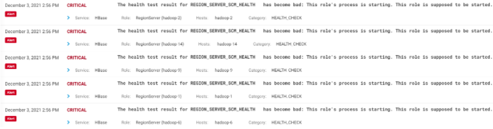

Large-Scale HBase Restarts
Phenomenon
HBase's RegionServer process restarts extensively

troubleshooting
The first restarted RegionServer node reported the following error:
2021-12-03 14:44:11,948 WARN org.apache.hadoop.hdfs.DFSClient: Failed to connect to /$server_ip:9866 for block BP-1167696284-$server-1562655739823:blk_1194519210_222148577, add to deadNodes and continue.
java.io.EOFException: Unexpected EOF while trying to read response from server
at org.apache.hadoop.hdfs.protocolPB.PBHelperClient.vintPrefixed(PBHelperClient.java:539)
at org.apache.hadoop.hdfs.client.impl.BlockReaderRemote.newBlockReader(BlockReaderRemote.java:407)
at org.apache.hadoop.hdfs.client.impl.BlockReaderFactory.getRemoteBlockReader(BlockReaderFactory.java:848)
at org.apache.hadoop.hdfs.client.impl.BlockReaderFactory.getRemoteBlockReaderFromTcp(BlockReaderFactory.java:744)
at org.apache.hadoop.hdfs.client.impl.BlockReaderFactory.build(BlockReaderFactory.java:379)
at org.apache.hadoop.hdfs.DFSInputStream.getBlockReader(DFSInputStream.java:644)
at org.apache.hadoop.hdfs.DFSInputStream.blockSeekTo(DFSInputStream.java:575)
at org.apache.hadoop.hdfs.DFSInputStream.readWithStrategy(DFSInputStream.java:757)
at org.apache.hadoop.hdfs.DFSInputStream.read(DFSInputStream.java:829)
at java.io.DataInputStream.read(DataInputStream.java:149)
at org.apache.hadoop.hbase.io.hfile.HFileBlock.readWithExtra(HFileBlock.java:765)
at org.apache.hadoop.hbase.io.hfile.HFileBlock$FSReaderImpl.readAtOffset(HFileBlock.java:1562)
at org.apache.hadoop.hbase.io.hfile.HFileBlock$FSReaderImpl.readBlockDataInternal(HFileBlock.java:1772)
at org.apache.hadoop.hbase.io.hfile.HFileBlock$FSReaderImpl.readBlockData(HFileBlock.java:1597)
at org.apache.hadoop.hbase.io.hfile.HFileReaderImpl.readBlock(HFileReaderImpl.java:1488)
at org.apache.hadoop.hbase.io.hfile.HFileBlockIndex$CellBasedKeyBlockIndexReader.loadDataBlockWithScanInfo(HFileBlockIndex.java:340)
at org.apache.hadoop.hbase.io.hfile.HFileReaderImpl$HFileScannerImpl.seekTo(HFileReaderImpl.java:852)
at org.apache.hadoop.hbase.io.hfile.HFileReaderImpl$HFileScannerImpl.reseekTo(HFileReaderImpl.java:833)
at org.apache.hadoop.hbase.regionserver.StoreFileScanner.reseekAtOrAfter(StoreFileScanner.java:347)
at org.apache.hadoop.hbase.regionserver.StoreFileScanner.reseek(StoreFileScanner.java:256)
at org.apache.hadoop.hbase.regionserver.StoreFileScanner.enforceSeek(StoreFileScanner.java:469)
at org.apache.hadoop.hbase.regionserver.KeyValueHeap.pollRealKV(KeyValueHeap.java:369)
at org.apache.hadoop.hbase.regionserver.KeyValueHeap.generalizedSeek(KeyValueHeap.java:311)
at org.apache.hadoop.hbase.regionserver.KeyValueHeap.requestSeek(KeyValueHeap.java:275)
at org.apache.hadoop.hbase.regionserver.StoreScanner.reseek(StoreScanner.java:995)
at org.apache.hadoop.hbase.regionserver.StoreScanner.seekAsDirection(StoreScanner.java:986)
at org.apache.hadoop.hbase.regionserver.StoreScanner.seekOrSkipToNextColumn(StoreScanner.java:755)
at org.apache.hadoop.hbase.regionserver.StoreScanner.next(StoreScanner.java:643)
at org.apache.hadoop.hbase.regionserver.KeyValueHeap.next(KeyValueHeap.java:153)
at org.apache.hadoop.hbase.regionserver.HRegion$RegionScannerImpl.populateResult(HRegion.java:6542)
at org.apache.hadoop.hbase.regionserver.HRegion$RegionScannerImpl.nextInternal(HRegion.java:6706)
at org.apache.hadoop.hbase.regionserver.HRegion$RegionScannerImpl.nextRaw(HRegion.java:6479)
at org.apache.hadoop.hbase.regionserver.RSRpcServices.scan(RSRpcServices.java:3133)
at org.apache.hadoop.hbase.regionserver.RSRpcServices.scan(RSRpcServices.java:3382)
at org.apache.hadoop.hbase.shaded.protobuf.generated.ClientProtos$ClientService$2.callBlockingMethod(ClientProtos.java:42002)
at org.apache.hadoop.hbase.ipc.RpcServer.call(RpcServer.java:413)
at org.apache.hadoop.hbase.ipc.CallRunner.run(CallRunner.java:130)
at org.apache.hadoop.hbase.ipc.RpcExecutor$Handler.run(RpcExecutor.java:324)
at org.apache.hadoop.hbase.ipc.RpcExecutor$Handler.run(RpcExecutor.java:304)
The above error report adds 1 DataNode to deadNodes. Looking at the logs before and after, it is found that all DataNodes were added to deadNodes one after another, and then a large number of chooseDataNodes appeared waiting.
2021-12-03 14:44:14,200 WARN org.apache.hadoop.hdfs.DFSClient: DFS chooseDataNode: got # 2 IOException, will wait for 5451.453074801748 msec.
Finally, trigger RegionServer shutdown in flushRegion
2021-12-03 14:56:05,063 ERROR org.apache.hadoop.hbase.regionserver.HRegionServer: ***** ABORTING region server hadoop-*,16020,1637906994273: Replay of WAL required. Forcing server shutdown *****
org.apache.hadoop.hbase.DroppedSnapshotException: region: $table,5401J8302AED1NKkbeAhMylocation1613999527000,1637420436099.ebdab45bddd73147920a80ca60a148d5.
at org.apache.hadoop.hbase.regionserver.HRegion.internalFlushCacheAndCommit(HRegion.java:2769)
at org.apache.hadoop.hbase.regionserver.HRegion.internalFlushcache(HRegion.java:2448)
at org.apache.hadoop.hbase.regionserver.HRegion.internalFlushcache(HRegion.java:2420)
at org.apache.hadoop.hbase.regionserver.HRegion.flushcache(HRegion.java:2310)
at org.apache.hadoop.hbase.regionserver.MemStoreFlusher.flushRegion(MemStoreFlusher.java:612)
at org.apache.hadoop.hbase.regionserver.MemStoreFlusher.flushRegion(MemStoreFlusher.java:581)
at org.apache.hadoop.hbase.regionserver.MemStoreFlusher.access$1000(MemStoreFlusher.java:68)
at org.apache.hadoop.hbase.regionserver.MemStoreFlusher$FlushHandler.run(MemStoreFlusher.java:361)
at java.lang.Thread.run(Thread.java:748)
Caused by: java.io.IOException: Could not get block locations. Source file "/user/hbase/path/ebdab45bddd73147920a80ca60a148d5/.tmp/cf/e884b98dcbb94c2a966ee17fec1f86ff" - Aborting...block==null
at org.apache.hadoop.hdfs.DataStreamer.setupPipelineForAppendOrRecovery(DataStreamer.java:1477)
at org.apache.hadoop.hdfs.DataStreamer.processDatanodeOrExternalError(DataStreamer.java:1256)
at org.apache.hadoop.hdfs.DataStreamer.run(DataStreamer.java:667)
Looking at one of the data node logs, there was a large number of block migrations before the connection failed.
2021-12-03 14:43:35,974 INFO org.apache.hadoop.hdfs.server.datanode.DataNode: Receiving BP-1167696284-$server-1562655739823:blk_1217984426_251581514 src: /$server1:56769 dest: /$server2:9866
During the peak period, thousands of blocks were migrated per minute, and then a large number of write failure errors occurred.
2021-12-03 14:44:11,025 INFO org.apache.hadoop.hdfs.server.datanode.DataNode: opWriteBlock BP-1167696284-$server-1562655739823:blk_1217989487_251586624 received exception java.io.IOException: Premature EOF from inputStream
2021-12-03 14:44:11,025 ERROR org.apache.hadoop.hdfs.server.datanode.DataNode: hadoop-*:9866:DataXceiver error processing WRITE_BLOCK operation src: /$server1:36532 dst: /$server2:9866
java.io.IOException: Premature EOF from inputStream
at org.apache.hadoop.io.IOUtils.readFully(IOUtils.java:210)
at org.apache.hadoop.hdfs.protocol.datatransfer.PacketReceiver.doReadFully(PacketReceiver.java:211)
at org.apache.hadoop.hdfs.protocol.datatransfer.PacketReceiver.doRead(PacketReceiver.java:134)
at org.apache.hadoop.hdfs.protocol.datatransfer.PacketReceiver.receiveNextPacket(PacketReceiver.java:109)
at org.apache.hadoop.hdfs.server.datanode.BlockReceiver.receivePacket(BlockReceiver.java:528)
at org.apache.hadoop.hdfs.server.datanode.BlockReceiver.receiveBlock(BlockReceiver.java:971)
at org.apache.hadoop.hdfs.server.datanode.DataXceiver.writeBlock(DataXceiver.java:903)
at org.apache.hadoop.hdfs.protocol.datatransfer.Receiver.opWriteBlock(Receiver.java:173)
at org.apache.hadoop.hdfs.protocol.datatransfer.Receiver.processOp(Receiver.java:107)
at org.apache.hadoop.hdfs.server.datanode.DataXceiver.run(DataXceiver.java:291)
at java.lang.Thread.run(Thread.java:748)
Then report an error
2021-12-03 14:44:11,647 WARN org.apache.hadoop.hdfs.server.datanode.DataNode: hadoop-9:9866:DataXceiverServer:
java.io.IOException: Xceiver count 4098 exceeds the limit of concurrent xcievers: 4096
at org.apache.hadoop.hdfs.server.datanode.DataXceiverServer.run(DataXceiverServer.java:150)
at java.lang.Thread.run(Thread.java:748)
It is prompted that the number of xceivers exceeds the configured 4096. This configuration item is dfs.DataNode.max.transfer.threads. The default value is 4096. All data nodes report errors in this order.
Looking again at why a large number of blocks were migrated in a short period of time, we found that these blocks came from a Hive task.
2021-12-03 14:44:08,339 INFO org.apache.hadoop.hdfs.StateChange: BLOCK* allocate blk_1217988988_251586118, replicas=$server1:9866, $server2:9866, $server3:9866 for /user/hive/warehouse/db/table/.hive-staging_hive_2021-12-03_14-41-15_268_2506643276888241386-19667/_task_tmp.-ext-10002/dt=dt/_tmp.000031_0
The problem is clear. One reason is that the data node is configured with too few transfer threads, and the other is that a large Hive task is executed, which triggers the problem.